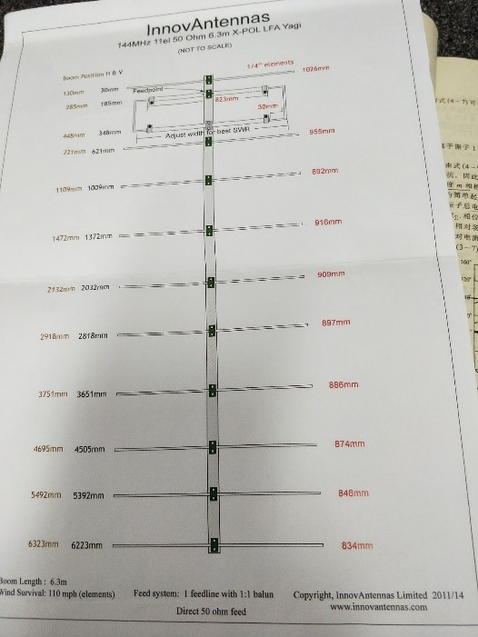

Yagi_Antenna
主讲嘉宾：胡超然 撰稿人：陈功
时间：2018年3月29日
八木天线也叫做“引向天线”、“八木宇田天线”(Yagi-Uda antenna)、“寄生天线”，是一种定向天线。这种天线是1928年由日本天线专家八木秀次和宇田太郞两人设计的。
本次安装的八木天线为144MHz 11el 50Ohm 6.3m X-POL LFA Yagi。长为6.3m，。由一个有源振子（一般用折合振子）、一个无源反射器和若干个无源引向器平行排列而成的。本次采用的天线是元发射天线。是由横向和纵向两排天线构成。振子，引向器，反射器纵横两排，如下图所示。这样可以更好地接受不同方向的信号。
与馈线相连的称有源振子，或主振子，居三对振子之中。比有源振子稍长一点的称反射器（1026mm），它在有源振子的一侧，起着削弱从这个方向传来的电波或从本天线发射去的电波的作用；比有源振子略短的称引向器，它位于有源振子的另一侧，它能增强从这一侧方向传来的或向这个方向发射出去的电波。引向器有9个，每根长度都要比其相邻的并靠近有源振子的那根略短一点。
每个引向器和反射器都是用一根金属棒做成。无论有多少“单元”，所有的振子，都是按一定的间距平行固定在一根“大梁”上。大梁也用金属材料做成。这些振子的中点要与大梁绝缘吗？当然需要，我们小组起初并没有注意到这个问题，只用了一个塑料夹固定引向器等，导致金属棒的一边与金属干接触。在团队的共同努力下，一个天线上面的金属棒很快就被装好了。后来胡学姐过来看一下，我们才知道装错了。还要拆了再重装一遍，一个多小时的劳动成果就这么没有了，以后同学们一定要引以为戒！！！弄明白了再行动。
反射器略长于半波长，因此呈感性，其感应电流滞后于感应电动势90°。振子位于反射器前方四分之波长处，其感应电动势超前反射器的感应电动势90°，而因为振子谐振，所以振子的电动势同电流同相。因此振子电流超前反射器电流180°，而反射器电流所感应出的磁场落后电流90°，感应磁场在振子上感应的电动势比磁场本身落后90°两者加起来刚好180°。最终，反射器在振子上的感应电动势同振子自身的感应电动势同相，二者叠加增强。引向器也依据类似的原理加强了振子的感应电动势。
在装天线的时候要注意测量的准确性（需要用卷尺测量），无论是反射器，引向器，都需要沿金属杆方向对齐，并且要使得同一方向的金属棒两两平行。本次的金属干长为6.3m，分为三段，对齐有一定的难度。（充分利用工具，电动的转螺纹机就比手动效率高出很多。）
装好天线之后，到室外空旷场地测试。注意，周围不能有太多的人围观，否则会影响天线对自我发出的信号的接收。同时，尽量把天线举高，不要使信号方向不远处有墙或建筑物阻隔，这样也会影响信号接受。此外，在测试的时候，要将天线水平放置，这样效果应该比较好。
测试用的是紫丁香测试设备，矢量网络分析仪，FieldFox Microwave Analyzer (N9918A 26.5GHz 如下图所示) 矢量网络分析仪功能很多，被称为“仪器之王”，是射频微波领域的万用表。在通信领域中，可以测天线的反射系数，也就是S11，也可以测驻波比，也就是VSWR。S11指的是1端口接受的信号与1端口发射的信号的电压比，天线谐振在中心频率的时候得到的S11就会是一个很小的数值。VSWR指驻波波腹电压与波谷电压幅度之比。驻波比等于1时，表示馈线和天线的阻抗完全匹配，此时高频能量全部被天线辐射出去，没有能量的反射损耗；驻波比大于1，则表示有一部分电波被反射回来，最终变成热量，使得馈线升温。驻波比为无穷大时，表示全反射，能量完全没有辐射出去。
忙了一下午，基本装完了两根天线，测试了其中一根。。晚饭后，继续装天线。有了先前的经验，挫折，教训，大家的效率提高了很多，两个多小时后，另外两根就装好了。后来知道，这批天线一共有二十根，不免大吃一惊! 我们为这次卫星升空做出了 0.0……1的贡献，哈哈哈！
天线图纸

矢量网络分析仪

以下为项目组全体人员合影

注 ：如有疑问，可参考《天线原理》一书